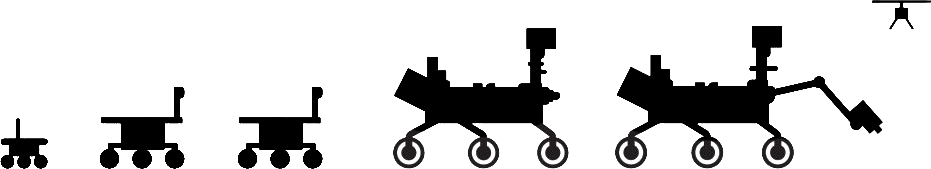
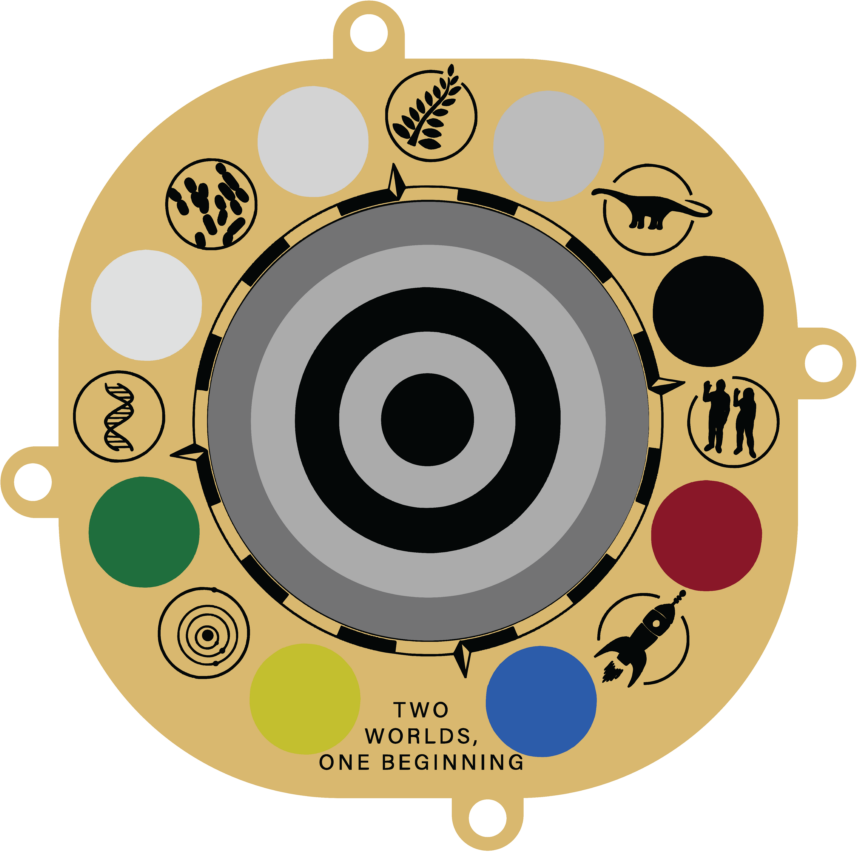
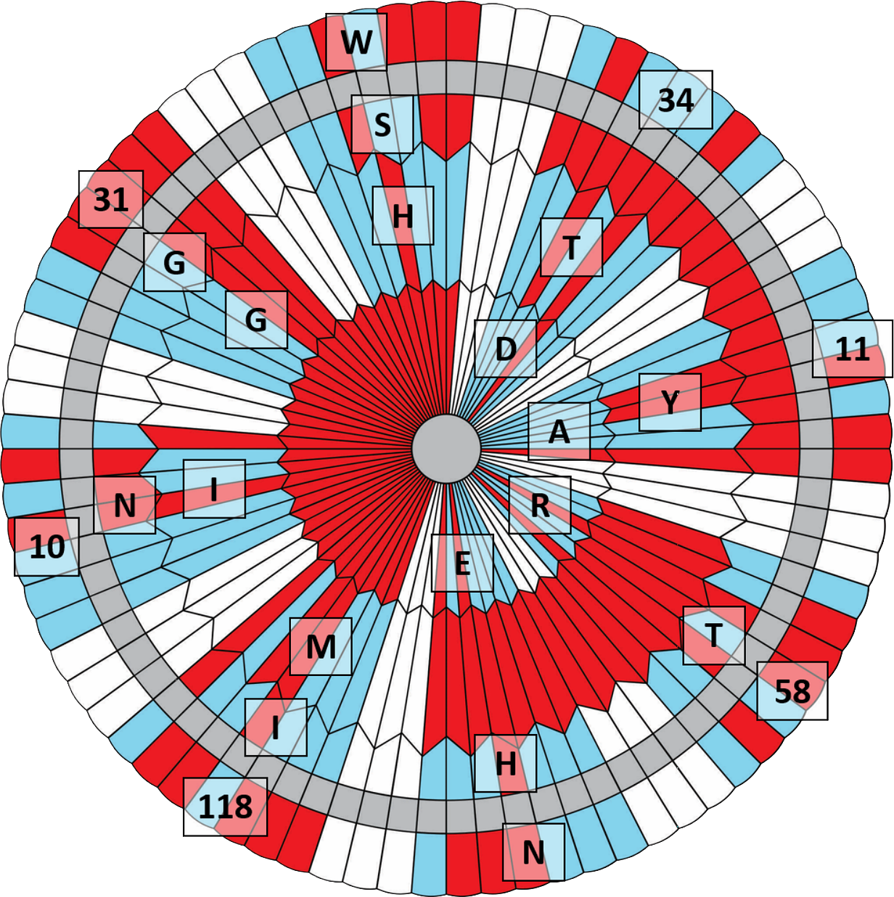
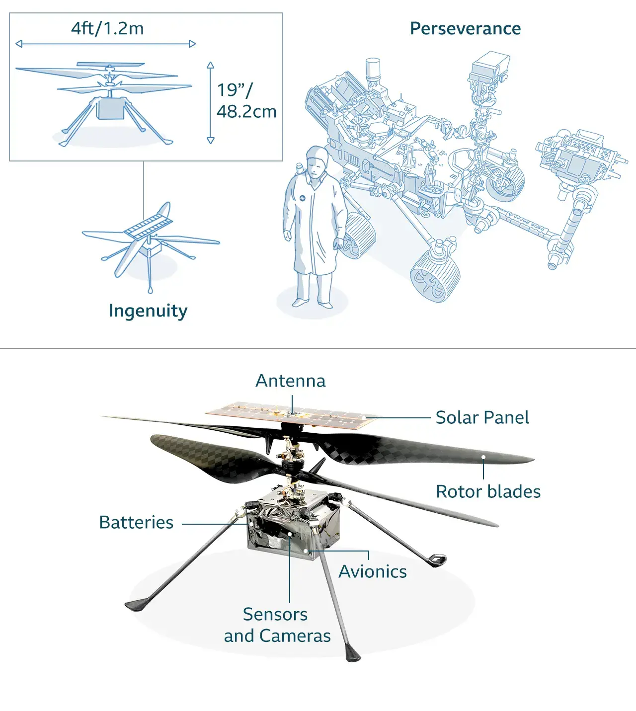

The Perseverance Rover’s body is called the warm electronics box, or “WEB” for short. Like a car body, the Rover body is a strong, outer layer that protects the Rover’s computer and electronics.
The Belly Pan: The front section of the underbelly (approx. 1.5 feet) served as a protective cover during landing.
Interior Workspace: Shortly after landing, the belly pan was dropped to expose the Sampling and Caching system to the Martian atmosphere, creating the necessary workspace for sample handling.
Main Job: Acting as a “Warm Electronics Box” (WEB), it protects the computer, electronics, and instruments from the extreme thermal swings of Mars.
The Rover’s brains, its computer, are in its boxy body. The computer module, the Rover Compute Element (RCE), has two identical RCEs so there is always a spare “brain”. The computer memory tolerates extreme radiation in space and on Mars. The RCE interfaces with the Rover’s engineering functions over two networks that follow an aerospace industry standard for the high-reliability airline and spacecraft requirements. The RCEs directly interface with the Rover instruments for command and science data exchange.
Processor: Radiation-hardened BAE RAD750 (PowerPC 750). Operates at 200 MHz, 10x faster than Spirit/Opportunity.
Redundancy: Two identical Rover Compute Elements (RCEs). One is active while the other acts as a backup.
Memory:
• 2 GB Flash memory
• 256 MB DRAM
• 256 KB EEPROM
“Nerves” (IMU): An Inertial Measurement Unit provides 3-axis position data, allowing precise movements and monitoring the Rover’s tilt for safe navigation.
Health Monitoring: The RCE constantly checks temperature and power levels, manages thermal controls, and schedules communication sessions with Earth and orbiters.
Robots have replicated much of the human sensory experience on Mars. Cameras have given us sight, robotic hands, arms and feet have supplied touch, and chemical and mineral sensors have let us taste and smell on Mars.
⬤ Total cameras: 23
Science cameras: 7
Entry, descent and landing cameras: 7
Main job: Identifies mineral compositions and seeks organic compounds. It uses a laser to zap and study rocks from up to 7 meters away.
The Microphones: Provides a new “sense” to probe rocks. It captures the staccato pop of laser impacts, wind, and Rover mechanical sounds.
Location: 15 mm boom on the Rover’s mast head.
Weight: Ultralight (30 grams).
Listening: Active during laser zaps (milliseconds) or up to 3.5 minutes for
environmental sounds.
The Perseverance Rover is the first mission to demonstrate gathering samples from Martian rocks and soil using its drill. The Rover stores the sample cores in tubes on the Martian surface. This sample caching process could potentially pave the way for future missions to collect the samples and return them to Earth for intensive laboratory analysis.
Step 1: Collection
Samples are drilled, placed in titanium tubes, and documented with precise
coordinates and local landmarks for future retrieval.
Step 2: Sealing & Inspection
A small internal robotic arm moves the tubes to the Rover’s belly. Here, they are
inspected and hermetically sealed to prevent any Earthly contamination.
Step 3: Depot Deposition
The Rover carries the tubes until it reaches a designated “Cache Depot”. The
samples are then left on the surface, ready to be picked up by a future mission to Earth.
Hardware: Includes 43 sample tubes, a bit carousel, and an ultra-clean assembly line inside the Rover body.
The Perseverance Rover has three antennas that serve as its “voice” and its “ears”. They are located on the Rover equipment deck. Having multiple antennas provides operational flexibility and back-up options in case they are needed.
1) Ultra-High Frequency Antenna
Main job: Transmitting data to Earth through Mars orbiters.
Frequency: UHF band (approx. 400 MHz).
Speed: Up to 2 megabits per second on the Rover-to-orbiter relay link.
2) X-band High-Gain Antenna
Main job: Direct data transmission to and from Earth.
Location: Mounted mid-aft portside of the Rover deck.
Size: Hexagonal, 1 foot (0.3 meters) in diameter.
Provided by: Spain (CDTI/CAB).
3) X-band Low-Gain Antenna
Main job: Receiving signals and data from Earth.
Frequency: X-band (7 to 8 GHz).
Performance: Reliable low-speed reception (approx. 10-30 bits per second) via the
Deep Space Network.
Engineers redesigned the Mars 2020 Perseverance Rover’s wheels to be more robust, due to wear and tear the Curiosity Rover wheels endured while driving over sharp, pointy rocks. Perseverance’s wheels are narrower, with a bigger diameter and thicker aluminum. Perseverance has six wheels, each with its own motor. The two front and two rear wheels also have individual steering motors, to turn in place a full 360 degrees. The four-wheel steering also lets the Rover swerve and curve, making arcing turns.
Materials: Machined Aluminum with 48 traction cleats (grousers). The interior features curved Titanium spokes that act as springy, shock-absorbing support.
Dimensions: 20.7 inches (52.5 cm) in diameter.
Efficiency: One full rotation moves the Rover exactly 65 inches (1.65 meters) forward.
Terrain Handling: Designed to climb over rocks up to 40 cm high while maintaining 6-wheel contact thanks to the Rocker-Bogie suspension.
Max speed: 0,12 Km/h
A mast for the cameras to give the Rover a human-scale view, providing an elevated vantage point that enhances depth perception and allows for panoramic environmental assessment, mimicking the perspective of a human observer.
Main Job: Acts as the Rover’s “head”, providing a high-altitude vantage point for cameras and laser instruments to study the Martian landscape.
Height: The mast sits about 7 feet (2.1 meters) above the ground, giving the cameras a human-like perspective.
Core Instruments:
• Mastcam-Z: High-definition zoom cameras for 3D panoramic color images.
• SuperCam: Uses a laser to “zap” rocks and identify their chemical makeup from a
distance.
• MEDA: Sensors that measure wind speed, temperature, and humidity.
Movement: The mast can rotate 360 degrees and tilt up or down, allowing the Rover to scan the entire horizon without moving its wheels.
The 7-foot-long (2.1 meters) robotic arm can move a lot like your arm. Its shoulder, elbow. and wrist “joints” offer maximum flexibility. Using the arm, the Rover works as a human geologist: holding and using science tools with its “hand”, or turret. The “hand tools” extract cores from rocks, take microscopic images. and analyze the elemental and mineral composition of Martian rocks and soil.
Main Function: A 7-foot (2.1 meters) robotic arm designed for Mars surface investigation and high-precision sample collection.
Degrees of Freedom (5): Powered by tiny rotary actuator motors, the arm moves via: Shoulder Azimuth, Shoulder Elevation, Elbow, Wrist, and Turret joints.
The “Hand” (Turret): A 45kg suite of scientific tools including:
• SHERLOC & WATSON: UV Raman/Fluorescence and imaging.
• PIXL: X-ray fluorescence spectrometer.
• GDRT: Gaseous Dust Removal Tool to clear surfaces.
The Drill: A rotary percussive system that extracts rock cores using
interchangeable bits (coring, regolith, and abrader).
Hole Diameter: 1 inch (27 mm).
For electrical power, Perseverance carries a radioisotope power system (RPS). This system produces a dependable electricity flow using the heat of plutonium-238’s radioactive decay as its “fuel”. The power source, called a Multi-Mission Radioisotope Thermoelectric Generator (MMRTG), has a 14-year operational lifetime. The MMRTG converts heat from the natural radioactive decay of plutonium into electricity to charge the Rover’s two primary batteries and keep the Rover’s tools and systems at their correct operating temperatures.
Main Job: Provides a steady flow of electricity to the Rover’s systems and keeps its “heart” warm during the freezing Martian nights.
How it works: It uses 4.8 kg of Plutonium Dioxide. The natural decay of this radioisotope creates heat, which is converted into 110 Watts of electrical power.
Energy Storage: Two Lithium-ion batteries handle peak demands when activities (like drilling or driving) exceed the steady output of the generator.
Reliability & Safety:
• Lifespan: Designed for 14+ years of operation.
• Armor: The fuel is ceramic (shatter-resistant) and encased in multiple layers
of missile-grade heat shielding.
Dimensions: 64 cm diameter, 66 cm long.
Weight: 45 kg.
This small but significant graphic, located on the Rover’s deck, depicts the silhouettes of the
generations of Rovers that paved the way for the Mars 2020 mission. The portrait includes the tiny
Sojourner (the first Rover to land in 1997), the twins Spirit and Opportunity, the car-sized
Curiosity, and finally Perseverance itself, accompanied by the history-making Mars Helicopter,
Ingenuity.
This “family” illustration serves as a reminder of the shared heritage of these robotic explorers.
It symbolizes how each mission is built upon the technological breakthroughs and scientific
discoveries of its predecessors, representing a continuous human presence and a legacy of
persistence on the Red Planet.

Because the Perseverance Rover was built and launched during the height of the COVID-19 pandemic, the
team wanted to honor the perseverance of healthcare workers worldwide.
An aluminum plate on the Rover’s left side depicts the Rod of Asclepius, the ancient Greek symbol
for
healing and medicine, supporting the Earth. This serves as a lasting memorial to the challenges of
2020 and a tribute to those who risked their lives to help others during the global crisis.
The SHERLOC instrument (Scanning Habitable Environments with Raman & Luminescence for Organics &
Chemicals) carries a special calibration target that includes a slice of a Martian meteorite. This
piece of rock was once part of Mars, fell to Earth, and has now been returned to its home planet.
Additionally, the target features a “geocache” coin made of spacesuit helmet-visor material. It is
inscribed with the address of the fictional detective Sherlock Holmes (221B Baker Street), allowing
geocaching enthusiasts on Earth to virtually “find” it through the Rover’s public image gallery.
Perseverance carries three tiny microchips stenciled with the names of 10,932,295 people who
participated in NASA’s “Send Your Name to Mars” campaign. These chips are mounted on a small
commemorative plate on the Rover’s aft crossbeam.
The plate features a graphic of Earth and Mars linked by the Sun. Look closely at the Sun’s rays,
and you will find the phrase “Explore as One” hidden in Morse code, symbolizing the global human
effort behind the mission.
The Mastcam-Z instrument features a primary calibration target that also serves as a functional
sundial. It is decorated with color and grayscale swatches to help scientists adjust the camera
settings based on Martian lighting conditions.
The sundial is inscribed with the motto “Two Worlds, One Beginning” and features small drawings of
early Earth life forms, such as cyanobacteria, a fern, and a dinosaur. It also includes a message of
goodwill in multiple languages for future explorers: “Are we alone? We came here to look for signs
of life... To those who follow, we wish a safe journey and the joy of discovery.

When the supersonic parachute deployed over the Martian surface, eagle-eyed viewers noticed an unusual red-and-white pattern in its concentric rings. This was not a random design; it was a binary code (representing 7-bit ASCII) that spelled out the phrase “Dare Mighty Things.” This motto is a famous quote from President Theodore Roosevelt and has long been the unofficial mantra of NASA’s Jet Propulsion Laboratory (JPL). Additionally, the outer ring of the parachute contained GPS coordinates: 34°11'58" N 118°10'31" W, which point directly to the main entrance of the JPL headquarters in Pasadena, California.

Strapped to the Rover’s belly for the journey to Mars was a technology demonstration, the Mars Helicopter, Ingenuity, which completed 72 historic flights. In a feat that’s been called a “Wright Brothers moment” Ingenuity became the first aircraft to achieve powered, controlled flight on another planet.
